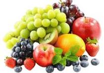

a fruit is the seed-bearing structure in flowering plants formed from the ovary after flowering. In culinary terms, fruits are generally recognized as the sweet, fleshy, and succulent produce of plants eaten in their raw state